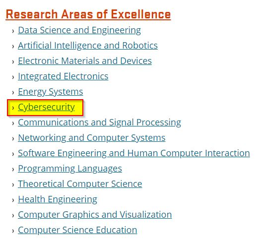
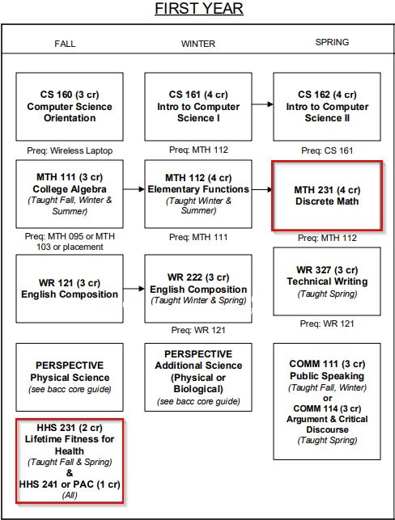
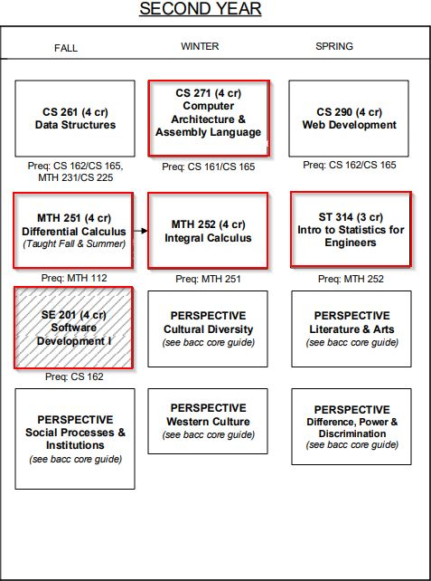
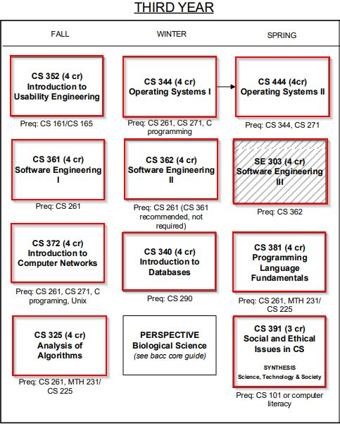
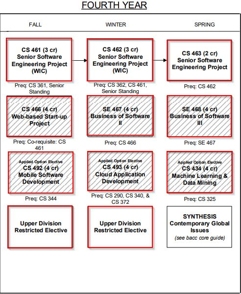
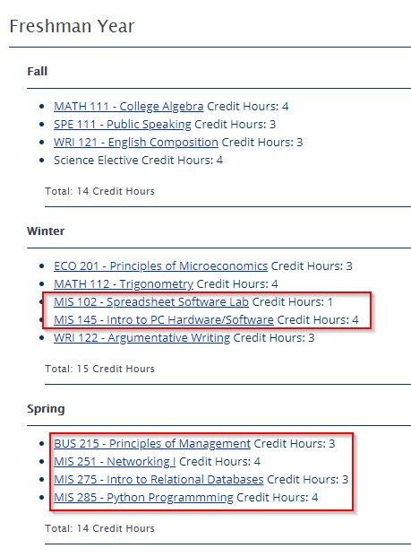
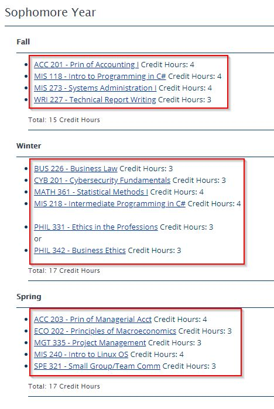
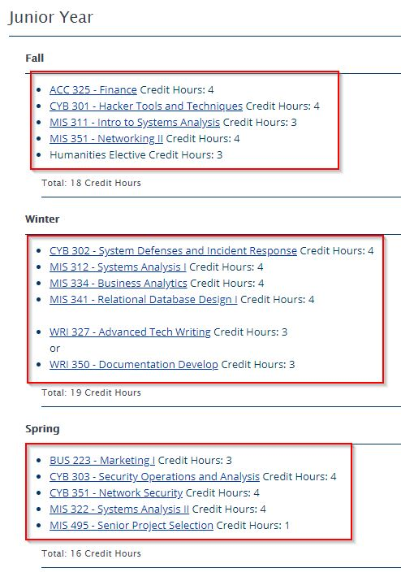
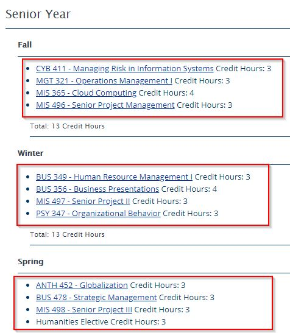

Choosing Colleges
Oregon State University Cascades
I want to go to OSU since their engineering programs are pretty amazing. I do know that happens in the valley and I would be willing to move there if I got into contact with the professors there. I would try out classes here in Bend first and then see if I want to make the move. The main reason is that the research here isn't engineering focused. In the research tab here there are three research opportunities for both OSU in the valley and in Central Oregon. The websites show a lot of different information, so a move to the valley might be best. I checked out the Industry and Partners section which is something I look for in a college. I want to get educated and also have an opportunity to meet private sector leaders.
Graduate Program Opportunities
They offer a master degree and a PhD level degree in the valley. In the college of Engineering they are advancing nuclear power. The college of engineering alone was able to get 56.8 million USD in research funding. Some other on going projects are Robotics, Materials Research, Clean Water, Precision Health and Clean Energy. I was having a hard time finding computer science related research, but then found the list below:
I did not know they had a cybersecurity option at OSU Cascades. The research that is on going at the moment is on how to query encrypted information, which I can't even begin to explain what they are doing. The cooler option they are researching is protecting the power grid. I watched a documentary on the biggest cyber security threats to the US, and the power grid was a big one. Imagine attacking a base, and before it is launched you cut the power to the building, that would be a huge advantage!
Yearly Course Classes
The highlighted classes below are what I will have to take when I move over after my AAOT is done.
   Oregon Institute of Technology
My first choice is OIT since I am going into Cybersecurity. OSU is a real option if I want to be a cybersecurity engineer, but I have been leaning towards being a pentester. I coded websites for about three years, and it got to a level of numbness from looking at code day in and out. I found that I like working with technology more than creating it. OIT is another amazing college, and they have the Cybersecurity Center there. I could finish up there and from what I heard the professors do a great job at helping you find work after graduating.
Wow, I just Googled OIT to look at their BS and graduate programs, and they now have a BS in cybersecurity as of Fall of this year (2019). I didn’t know they would be that good of a fit, I was planning on getting their BS in IT online degree.
Graduate Program Opportunities
The Cyber Defense Center at OIT is pretty great. The volume of work they are going to get is pretty phenomenal. They give businesses are free assessment, which will give the Center a huge amount of experience. The director of the Center is Brian Page, who has 20 years experience in cybersecurity. That alone is great since they have experience when there were mainly manuals for how devices worked. I am guessing there was not a career pathway as great as today for cybersecurity when he started. So anyone who can get around computers like that is very talented in my book.
Around 7 years ago I was planning on going to OIT for a dual degree in software engineering and hardware engineering, but wasn't very passionate about it. The one sense of the atmosphere at OIT was that it was hands on is the best way to learn. I think that is what they are doing with their graduate research. On their website they call it a "teaching hospital" for cybersecurity students. This is kind of beyond hands on lab work, since you can work for a real company doing a free assessment.
Yearly Course Classes
Below are the classes I will have to take. OIT is notorious for not accepting COCC credit so there will be quite a bit more to take at OIT than if I went to OSU.
   